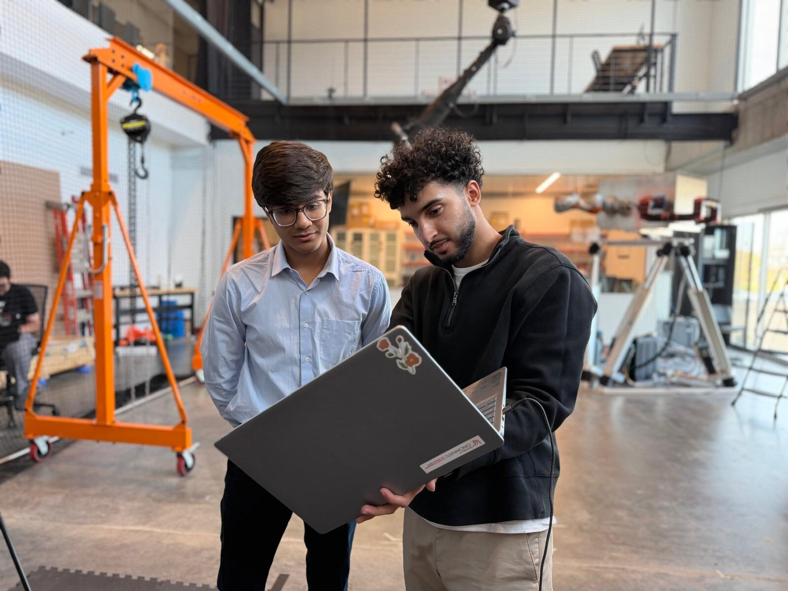

Become a Mentee
Join a Senior Design project for one semester. Learn how real engineering teams make decisions, test ideas, document work, manage uncertainty, and communicate technical progress.
Explore the mentee experience →Earlier-stage engineering students learn alongside a real Senior Design project for one semester. Senior students build technical leadership by mentoring one student at a time.
Senior Design is often a student's first sustained experience with a large, open-ended engineering problem. This program gives younger students an earlier look at that process while giving seniors a structured opportunity to practice technical leadership.
Mentees do more than sit in meetings. They are expected to ask questions, understand the project's progress, and contribute through appropriately scoped work such as documentation, technical summaries, literature review, testing observations, or other project activities.

Join a Senior Design project for one semester. Learn how real engineering teams make decisions, test ideas, document work, manage uncertainty, and communicate technical progress.
Explore the mentee experience →Stay fully part of your existing Senior Design team while individually mentoring one earlier-stage student. Your teammates do not need to participate.
Explore the mentor experience →
The purpose is to develop technical understanding, not simply meeting attendance.
The program is open to everyone. Eligible University Honors students may also complete their participation as a pre-approved Honors Experience with the applicable 75-hour requirement and reflections.
For mentors, ordinary Senior Design work performed independently does not count as mentoring time. Mentorship-specific activity — including project explanation during shadowing, direct discussions, reviewing mentee work, preparing learning activities, mentee interviews, and related responsibilities — may contribute to the mentoring experience.
See how the Honors component works →You do not need to be an Honors student to become either a mentor or a mentee. Honors requirements apply only to students completing the experience for Honors credit.
There is currently no application deadline. Matches are made based on project availability, student interests, schedule compatibility, and fit.